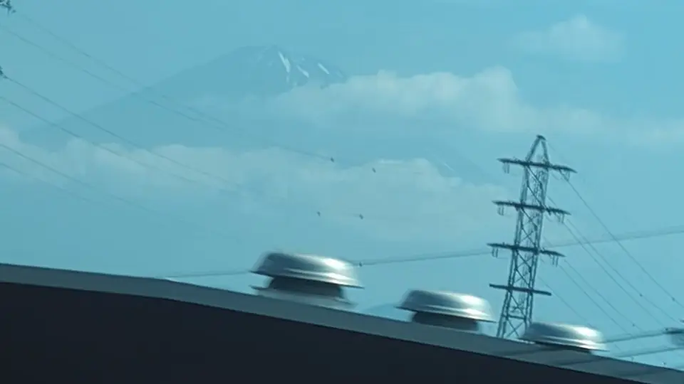
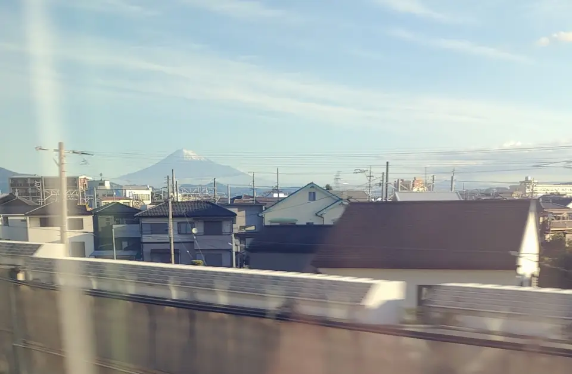

TOKAIDO SHINKANSEN WINDOW VIEW
When can you see Left-Side Fuji from the Shinkansen?
For 28 seconds, Fuji switches sides.

- Section
- Just after Shizuoka Sta. and the Abe River
- Seat side
- Seat A · sea side
- Timing
- About 54 minutes after leaving Tokyo on a Nozomi train
- Photos
- 3 photos
How to find Left-Side Fuji
Heading from Tokyo toward Shin-Osaka, start looking just after Shizuoka Station, soon after crossing the Abe River. Mt. Fuji normally belongs to Seat E, but in this short stretch it appears on the opposite Seat A side. Known as a lucky left-side Fuji, it is a tiny reward that lasts only a few seconds. Seat A gets its moment too.
More: Traffic News: Left-side Fuji (Japanese only)
From Tokyo toward Shin-Osaka, watch the Seat A · sea side window just after Shizuoka Station and the Abe River crossing. Toward Tokyo, the order is reversed.
Location at a glance
Open mapSwitch between the spot and the Shinkansen viewpoint.
Why this view matters
Left-Side Fuji is one of the window views that make the Tokaido Shinkansen more than a transfer. The train moves fast, so visibility depends on weather, seat position, and timing.
Left-Side Fuji in photos


 Related
Shimizu Port and CHIKYU
Related
Shimizu Port and CHIKYU
 Related
Shizuoka Tea Fields
Related
Shizuoka Tea Fields
 Related
Kakegawa Castle
Related
Kakegawa Castle